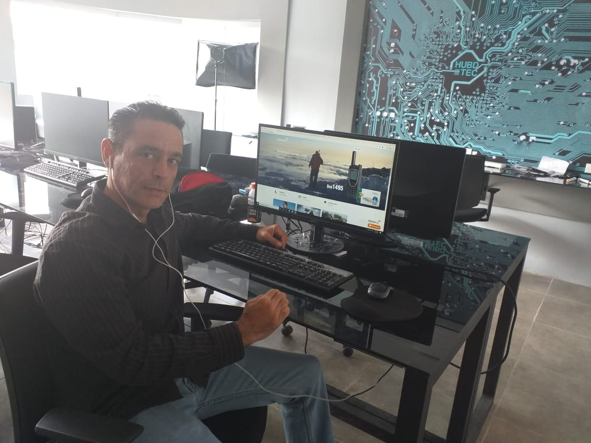

Curriculum Vitae Lester

Descripcion Personal
Soy Cubano, Ingeniero en Telecomunicaciones y Electronica, Apasionado de la Tecnologia, Emprendedor, con amplios conocimientos De Electricidad Electronica y Automatizacion de Industrias, sali de mi Pais para ayudar economicamente a mis hijos y a mis padres, al llegar a Bolivia no pude trabajar en mi profesion, y como siempre me gusto programar, me incline hacia el Desarrollo Web y Desarrollo de Aplicaciones, ya curse Next U, he comprado cursos en Udemy, por lo que tengo un nivel en estos temas, pero aun me falta profundizar un poco mas, me hubiera haber conocido Henry mucho antes y haber logrado mis objetivos de encontrar un trabajo como Desarrollador Full Stack un poco antes.
Educacion
Universitario Titulo Ingeniero en Telecomunicaciones y Electronica
1 -Front End en Next U2- Back End en Next U
3- Aplicaciones Moviles Next U
4- Fundamentos Marketing Next U
5- Curso After Effect Next U
Nota: En Next U no adquiri los conocimientos que esperaba, eso espero lograrlo en Henry, para de una vez encontrar un trabajo de Desarrollador Full Stack
Experiencias Laborales
1 -2006 al 2016 Empresa Zeti(Automatizacion Industral) Villa Clara Cuba2- 2013 al 2018 Reparacion de Equipo Electronico en Talleres Villa Clara Cuba
3- Agosto 2018 al Noviembre 2018 Instalaciones Electricas Rurrenabaque Bolivia
4- Noviembre 2018 al Junio 2019 Empresa SFrequency(Instalaciones Electricas y Diseño Electronico)
5- Julio 2019 al Marzo 2021 Empresa HUBDTEC(Electricidad, Telefonos Satelitales, Desarrollo Web, Marketing
6- Marzo del 2021 hasta la Fecha(Custodio de un Condominio) Profundizando Estudio en Desarrollo web para un mejor Trabajo
Skills
1 -Amplios conocimientos de Diseño, Reparacion y Mantenimiento en Electricidad, Electronica y Automatizacion2- Conocimientos Basicos en Diseño Grafico, Desarrollo web, Aplicaciones Moviles